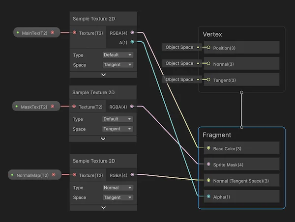

Make a shader or a visual effect graph compatible with 2D lights in the Universal Render Pipeline (URP).
By default, sprites and tiles you drag into the Scene view use the Sprite-Lit-Default shader, which is already compatible with 2D lights.
To manually set a sprite to use the Sprite-Lit-Default shader, follow these steps:
To create a custom shader that reacts to 2D lights, use Shader Graph.
Follow these steps:
In the Assets menu, go to Create > Shader Graph > URP > Sprite Lit Shader Graph.
Open the newly created shader graph asset.
Add three Sample Texture 2D nodes to the shader graph.
Set the Type of one of the new nodes to Normal.
Connect the outputs of the nodes to the following Fragment context input slots:
MainTex: Defines the base color and transparency (alpha) of the sprite.MaskTex: Determines areas of the sprite that should be visible or hidden using a custom mask.NormalMap: Adds surface details by simulating bumps and grooves, enhancing lighting effects on the sprite.Drag each property into the shader graph workspace and connect them to the Texture input slots in the corresponding Sample Texture 2D nodes.
Select Save Asset to save the shader.

You can now apply the shader graph to a material and use it on sprites in a scene, allowing sprites to interact with 2D lights.
To create a visual effect graph that reacts to 2D light, follow these steps:
For more information, refer to Using a Shader Graph in a visual effect.